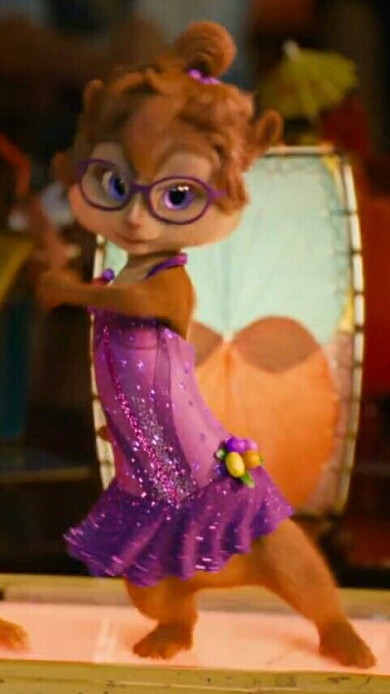
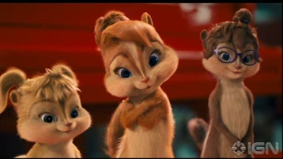
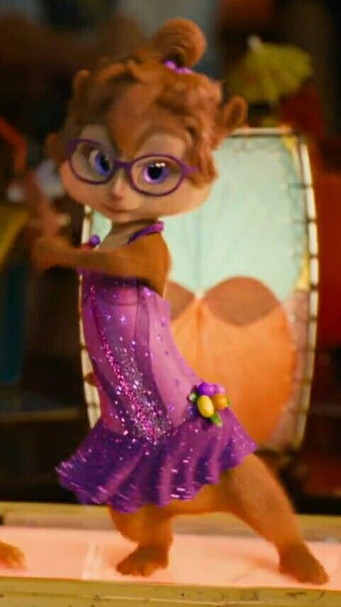
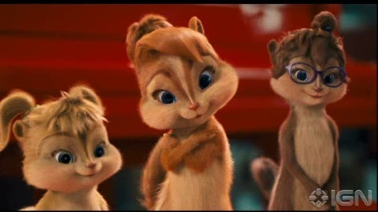

History of Alvin and the Chipmunks
Alvin and the Chipmunks is a musical group consisting of three anthropomorphic chipmunks named Alvin, Simon, and Theodore. The concept was created by Ross Bagdasarian Sr. in 1958, who also provided the voices for the characters and wrote many of their hit songs.
The story of Alvin and the Chipmunks began when Bagdasarian was on a long car trip and noticed that the pitch of his voice changed when he spoke into a fan. This gave him the idea to create characters with high-pitched voices, and he recorded himself singing several popular songs at a slow speed, then played them back at a higher speed to create the signature chipmunk sound.
The first song Bagdasarian released under the name "David Seville and the Chipmunks" was "The Chipmunk Song (Christmas Don't Be Late)" in 1958. The song was a huge success, reaching #1 on the Billboard Hot 100 chart and earning Bagdasarian three Grammy Awards.
Following the success of the first single, Bagdasarian created a cartoon series based on the Chipmunks, which aired from 1961 to 1962. The show followed the misadventures of Alvin, Simon, and Theodore as they tried to make it in the music industry with the help of their human friend and manager, Dave Seville (a fictionalized version of Bagdasarian himself).
In the years that followed, the Chipmunks remained popular, releasing numerous albums and appearing in several more TV shows and movies. Bagdasarian passed away in 1972, but his son Ross Bagdasarian Jr. continued the family legacy by taking over the voices of the characters and producing new Chipmunks content.
In 2007, a new generation was introduced to the Chipmunks when a live-action/CGI movie was released, featuring Jason Lee as Dave Seville and the voices of Justin Long, Matthew Gray Gubler, and Jesse McCartney as Alvin, Simon, and Theodore, respectively. The film was a box office success and spawned several sequels.
Today, Alvin and the Chipmunks remain beloved by fans of all ages, with their classic songs and zany adventures continuing to entertain audiences around the world.